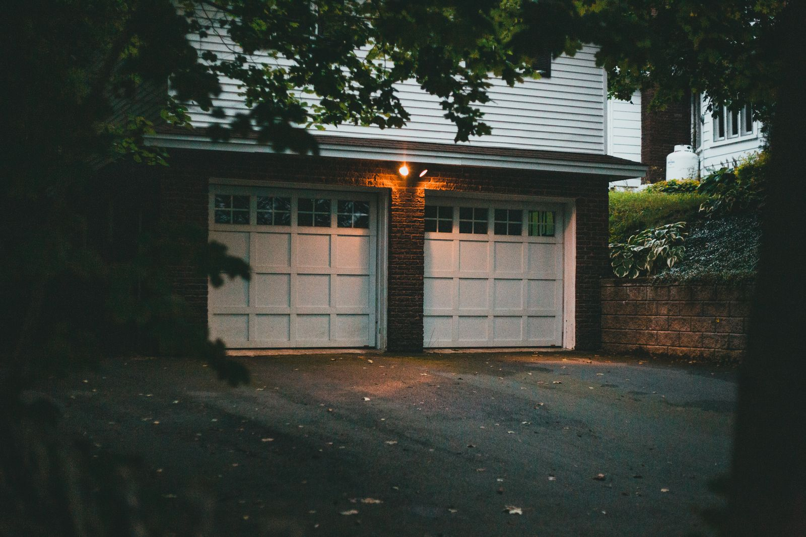

Broken spring, dead opener, or a door that's off its track? One call connects you with a local garage door technician serving Fullerton and North Orange County.
Call (714) 874-2400A snapped torsion or extension spring leaves your door dead and dangerous. A technician can replace springs safely and balance the door so it lifts smoothly again.
Motor humming but the door won't move? Remote or keypad stopped working? Get openers repaired, or a new quiet belt-drive opener installed with modern safety features.
Replace a worn, dented or outdated door with a new insulated steel, carriage-house or modern-style door, measured and fitted to your opening.
Frayed cables, worn rollers and bent or misaligned tracks cause grinding, jerking and doors that jam halfway. These wear parts can usually be replaced the same visit.
A door that came off its track or took a hit from a bumper doesn't always need full replacement. Get an honest assessment of repair versus replacement.
Car trapped in the garage or a door that won't close at night is a security problem, not an inconvenience. Call for the fastest available local help.
Fullerton and surrounding North Orange County communities, including:
My door won't open and there's a gap in the spring above it. What happened? That's a broken torsion spring — the most common garage door repair. Don't try to force the door or replace the spring yourself; springs are under extreme tension. Call a technician.
How much does spring replacement cost? It depends on door size and spring type. A technician can give you an exact price once they know your door — call and describe it.
Can my opener be repaired, or do I need a new one? Many opener problems are simple — sensors, gears, remotes or logic boards. A technician will tell you honestly whether repair or replacement makes sense.
Is the call free? Yes, there is no charge to call and no obligation to proceed with any work.
One call is all it takes to get a local technician on it.
Call (714) 874-2400